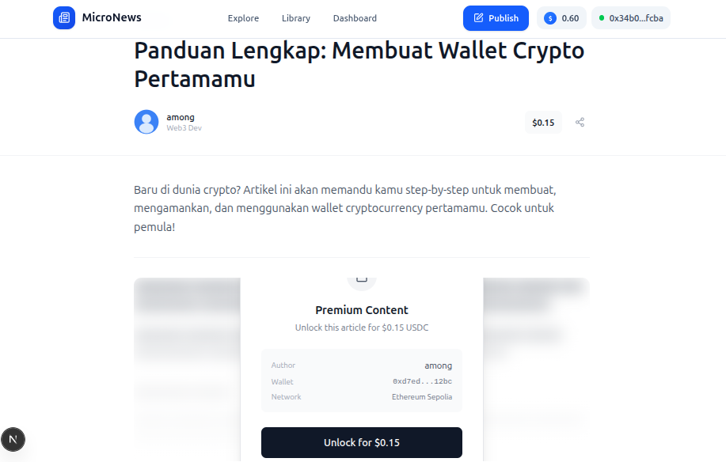
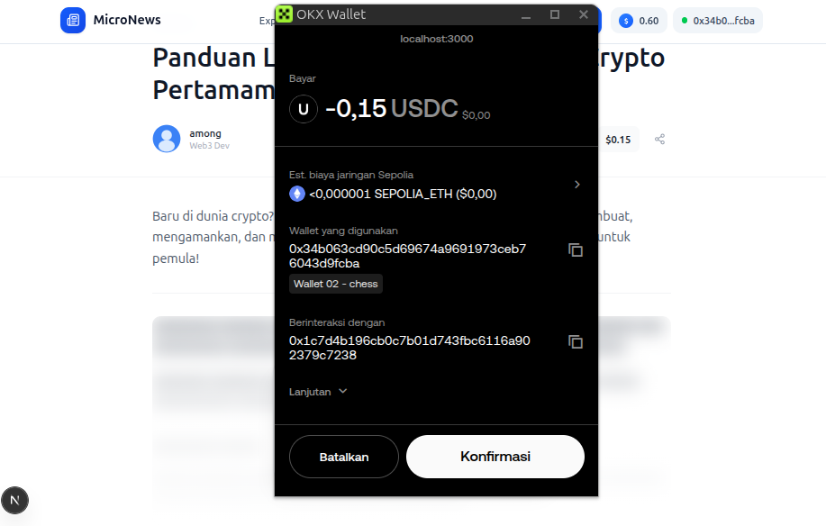
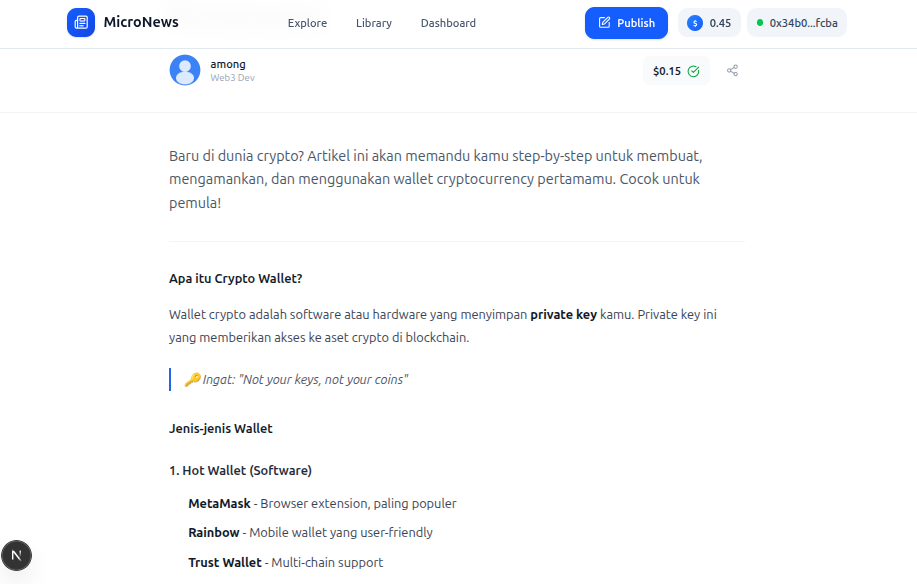
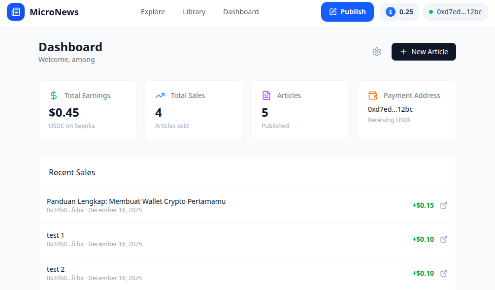

Riset ini berfokus pada penerapan standar web HTTP 402 (Payment Required) untuk memfasilitasi transaksi digital langsung (Direct P2P) antara penyedia konten dan konsumen. Menggunakan jaringan Ethereum Sepolia dan stablecoin USDC, sistem ini menghilangkan kebutuhan akan payment gateway pihak ketiga. Penelitian mendemonstrasikan prototype platform "MicroNews" di mana konten premium dikunci dan hanya terbuka setelah validasi pembayaran on-chain berhasil.
HTTP Status Code 402 Payment Required telah dicadangkan dalam spesifikasi HTTP/1.1 (RFC 7231) sejak awal internet. Namun, kode ini hampir tidak pernah digunakan karena tidak ada infrastruktur pembayaran yang memadai.
Sistem pembayaran Web2 saat ini memiliki kelemahan:
| Komponen | Teknologi | Fungsi |
|---|---|---|
| Client | Browser + MetaMask | Request konten, kirim pembayaran |
| Server | Next.js 15 | Gatekeeper, validasi pembayaran |
| Blockchain | Ethereum Sepolia | Ledger, verifikasi transaksi |
| Token | USDC (ERC-20) | Medium pembayaran stabil |
Secara matematis, fungsi kontrol akses protokol x402 dapat didefinisikan sebagai:
Definisi 1 (Access Control Function). Untuk sebuah resource \(r\) dan wallet address \(w\), fungsi akses \(\mathcal{A}\) didefinisikan sebagai:
$$\mathcal{A}(r, w) = \begin{cases} \text{HTTP 200} + C_{\text{full}} & \text{if } w = w_{\text{author}}(r) \\ \text{HTTP 200} + C_{\text{full}} & \text{if } \exists \, tx \in \mathcal{O} : (tx_w = w) \land (tx_r = r) \\ \text{HTTP 402} + C_{\text{teaser}} & \text{otherwise} \end{cases}$$Dimana:
| Layer | Technology |
|---|---|
| Frontend | Next.js 15 (App Router), Tailwind CSS |
| Blockchain | ethers.js 6.x, MetaMask |
| Database | JSON Files (prototype) |
| Network | Ethereum Sepolia Testnet |
Berikut adalah potongan kode utama dari file /api/article/[id]/route.ts yang mengimplementasikan
protokol x402:
export async function GET(request: NextRequest) { const articleId = params.id; const walletAddress = request.headers.get('X-Wallet-Address'); // Get article and author from database const article = await db.getArticleById(articleId); const author = await db.getAuthorById(article.authorId); // Check if user is the author (free access) const isAuthor = walletAddress === author.walletAddress; // Check if user has already paid const hasPaid = await db.hasUserPurchased(walletAddress, articleId); // If author or paid → return full content if (isAuthor || hasPaid) { return NextResponse.json({ ...article, fullContent: article.fullContent, // Premium! unlocked: true }, { status: 200 }); } // NOT PAID → Return HTTP 402 Payment Required return NextResponse.json({ ...article, fullContent: null, // No premium content unlocked: false, paymentRequirements: { scheme: 'exact', network: 'ethereum-sepolia', amount: article.price, currency: 'USDC', recipient: author.walletAddress // Direct to author! } }, { status: 402 }); // ← HTTP 402 }
Proses verifikasi pembayaran on-chain dapat dimodelkan secara matematis:
Definisi 2 (Payment Verification). Untuk sebuah transaksi \(tx\) dengan hash \(h\), fungsi verifikasi \(\mathcal{V}\) didefinisikan sebagai:
$$\mathcal{V}(tx) = \begin{cases} \text{VALID} & \text{if } \bigwedge \begin{cases} tx_{\text{to}} = w_{\text{seller}} \\ tx_{\text{amount}} \geq P_{\text{req}} \\ tx_{\text{status}} = \text{confirmed} \\ h \notin \mathcal{H}_{\text{used}} \end{cases} \\ \text{INVALID} & \text{otherwise} \end{cases}$$Dimana:
Berikut adalah bukti visual dari implementasi sistem pembayaran x402 pada platform MicroNews:




| Test Case | Status | Keterangan |
|---|---|---|
| Connect wallet | ✅ PASS | OKX Wallet terhubung |
| View teaser (402 response) | ✅ PASS | Konten terkunci dengan blur |
| Send USDC payment | ✅ PASS | Transaksi on-chain berhasil |
| Verify payment | ✅ PASS | Order tersimpan di database |
| Access premium content | ✅ PASS | Konten terbuka sepenuhnya |
| Prevent double payment | ✅ PASS | Deteksi existing order |
| Replay attack prevention | ✅ PASS | TxHash duplikat rejected |
Network: Ethereum Sepolia USDC Contract: 0x1c7D4B196Cb0C7B01d743Fbc6116a902379C7238 From: 0x34b063cd90c5d69674a9691973ceb76043d9fcba (Buyer) To: 0xd7ed6cdcf3e25bd2d424058fccb042eb3e8112bc (Author) ← Direct! Amount: 0.15 USDC TxHash: 0x1e67966fbfbe555d8472f5fc004ce6c8f5ff955e07c09d51f0900fa0ff28c7f5 Article: "Panduan Lengkap: Membuat Wallet Crypto Pertamamu" Status: ✓ Confirmed
| Aspek | Gateway Tradisional | Protokol X402 |
|---|---|---|
| Biaya transaksi | 2.9% + $0.30 | < $0.01 |
| Settlement time | 2-7 hari | ~12 detik |
| Potongan platform | 15-30% | 0% |
| Micropayment feasible | ❌ Tidak | ✅ Ya |
Definisi 3 (Cost Function). Untuk pembayaran sebesar \(P\) USDC:
Gateway Tradisional:
$$C_{\text{gateway}}(P) = P \cdot r + c_{\text{fixed}}$$ $$\text{Contoh Stripe: } C(P) = P \cdot 0.029 + 0.30$$Protokol x402 (Layer-2):
$$C_{\text{x402}}(P) = g \approx 0.001 \text{ USD}$$Savings:
$$\Delta C = C_{\text{gateway}} - C_{\text{x402}} = P \cdot 0.029 + 0.30 - 0.001$$Untuk transaksi \(P = \$10\):
Protokol x402 sangat fleksibel dan dapat diterapkan untuk berbagai jenis produk:
| Jenis Produk | Contoh | Response Setelah Bayar |
|---|---|---|
| Konten Digital | Artikel, E-book, Video | Unlock content langsung |
| Source Code | Template, Plugin, Script | Download ZIP / akses repo |
| API Service | AI API, Data API | Generate API key |
| Digital File | PDF, Design, Audio | Direct download link |
| Barang Fisik | Merchandise, Produk | Generate resi pengiriman |
Alur untuk setiap jenis produk sama: Request → 402 → Payment → Verify → Deliver. Yang berbeda hanya "delivery method" setelah payment terverifikasi.
Dengan gas fee <$0.01 di Layer-2, penjual dapat menanggung biaya gas untuk meningkatkan konversi. Analisis kelayakan:
| Harga Produk | Gas Fee | % dari Harga | Layak? |
|---|---|---|---|
| $0.50 (Artikel) | $0.005 | 1% | ✅ Ya |
| $10 (E-book) | $0.005 | 0.05% | ✅ Ya |
| $50 (API Access) | $0.005 | 0.01% | ✅ Sangat layak |
Untuk marketplace multi-vendor, smart contract Payment Splitter dapat membagi pembayaran secara otomatis:
Definisi 4 (Revenue Split Function). Untuk pembayaran \(P\) dengan platform fee \(f\), pembagian revenue didefinisikan sebagai:
$$\mathcal{S}(P, f) = \begin{pmatrix} S_{\text{seller}} \\ S_{\text{platform}} \end{pmatrix} = \begin{pmatrix} P \cdot (1 - f) \\ P \cdot f \end{pmatrix}$$Contoh Perhitungan:
Dengan \(f = 0.025\) (2.5%), untuk pembayaran \(P = \$100\) USDC:
$$S_{\text{seller}} = P \cdot (1 - f) = 100 \cdot 0.975 = \$97.50$$ $$S_{\text{platform}} = P \cdot f = 100 \cdot 0.025 = \$2.50$$Pembagian dilakukan secara atomik dalam satu transaksi smart contract.
// SPDX-License-Identifier: MIT pragma solidity ^0.8.19; import "@openzeppelin/contracts/token/ERC20/IERC20.sol"; contract PaymentSplitter { IERC20 public usdc; address public platform; uint256 public platformFee = 250; // 2.5% (basis points) event PaymentSplit( address buyer, address seller, uint256 sellerAmount, uint256 platformAmount ); function pay(address seller, uint256 amount) external { // Transfer dari buyer ke contract usdc.transferFrom(msg.sender, address(this), amount); // Hitung pembagian uint256 fee = (amount * platformFee) / 10000; uint256 sellerAmount = amount - fee; // Transfer ke masing-masing usdc.transfer(seller, sellerAmount); // 97.5% ke seller usdc.transfer(platform, fee); // 2.5% ke platform emit PaymentSplit(msg.sender, seller, sellerAmount, fee); } }
| Platform | Fee | Settlement | Minimum Payout |
|---|---|---|---|
| Gumroad | 10% | 7 hari | $10 |
| Patreon | 8-12% | Bulanan | $25 |
| Ko-fi | 0-5% | 5 hari | PayPal min |
| x402 Marketplace | 2.5% | Instant | $0 |
Contoh implementasi untuk menjual akses API dengan x402:
Protokol HTTP 402 yang "reserved for future use" akhirnya menemukan implementasi praktis berkat blockchain. Sistem P2P dengan USDC menawarkan alternatif lebih efisien, transparan, dan adil untuk monetisasi konten digital.
[1] Fielding, R., & Reschke, J. (2014). HTTP/1.1: Semantics and Content. RFC 7231. IETF. https://datatracker.ietf.org/doc/html/rfc7231
[2] Coinbase. (2024). x402: HTTP Native Payments. https://github.com/coinbase/x402
[3] Buterin, V. (2014). Ethereum Whitepaper. https://ethereum.org/en/whitepaper/
[4] Circle. (2024). USDC Technical Documentation. https://developers.circle.com/stablecoins/docs
[5] Ethereum Foundation. (2024). ERC-20 Token Standard. https://eips.ethereum.org/EIPS/eip-20
[6] OpenZeppelin. (2024). Payment Splitter Contract. https://docs.openzeppelin.com/contracts/4.x/api/finance
| Method | Endpoint | Description |
|---|---|---|
| GET | /api/article/[id] | Get article (402 if not paid) |
| POST | /api/verify-payment | Verify blockchain payment |
| GET | /api/author/stats | Author earnings & sales |
| POST | /api/author/articles | Create new article |